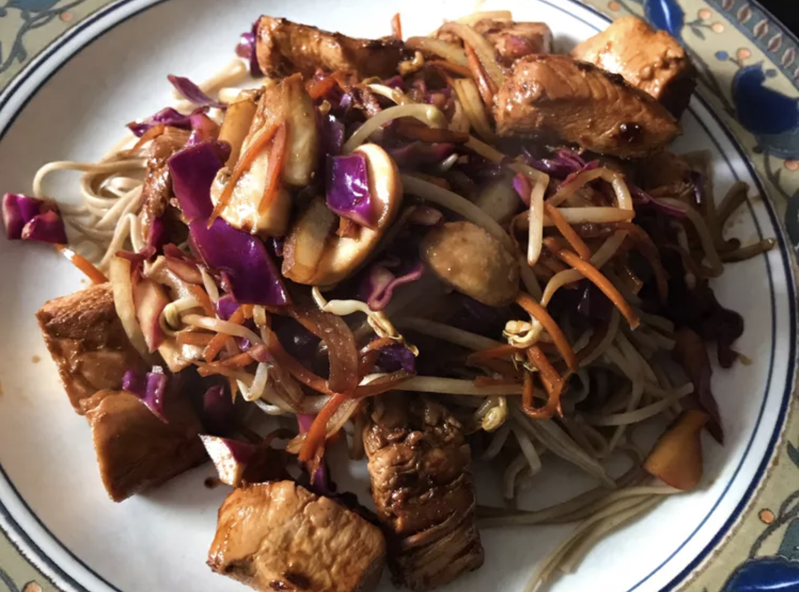

Yakisoba Chicken

Description
Japanese buckwheat flour noodles with chicken at their best! Noodles can be found in an Asian foods market.
Ingredients
- ½ teaspoon sesame oil
- 1 tablespoon canola oil
- 2 tablespoons chile paste
- 2 cloves garlic, chopped
- 4 skinless, boneless chicken breast halves - cut into 1 inch cubes
- ½ cup soy sauce
- 1 onion, sliced lengthwise into eighths
- ½ medium head cabbage, coarsely chopped
- 2 carrots, coarsely chopped
- 8 ounces soba noodles, cooked and drained
Instructions
- Stir-fry sesame oil, canola oil, and chili paste in a skillet.
- Add garlic, then chicken and 1/4 cup soy sauce; cook until chicken is no longer pink.
- Remove chicken mixture; stir-fry onion, cabbage, and carrots until cabbage wilts.
- Return chicken mixture to the pan, add cooked noodles, and remaining soy sauce; mix and serve.
Home